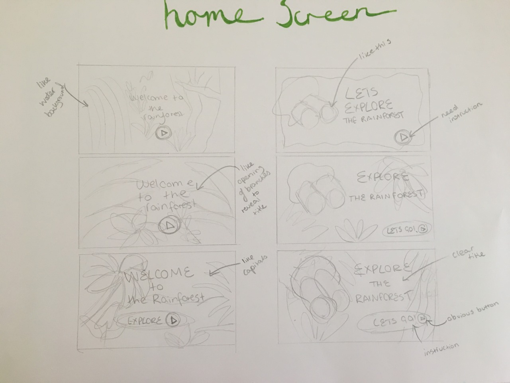
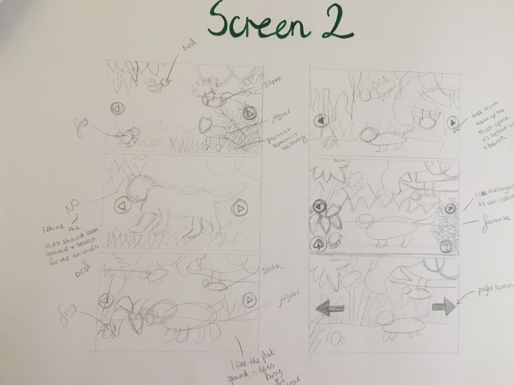
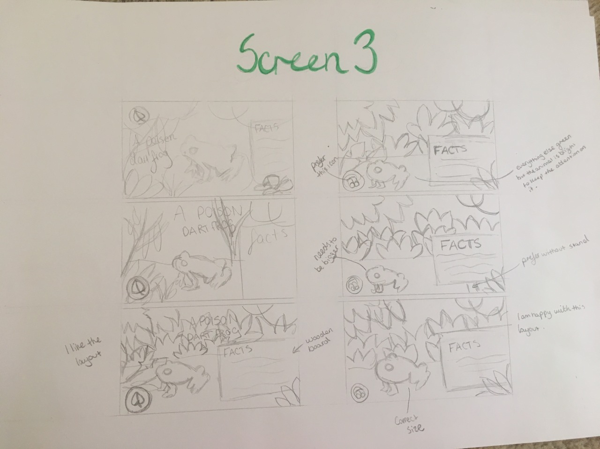
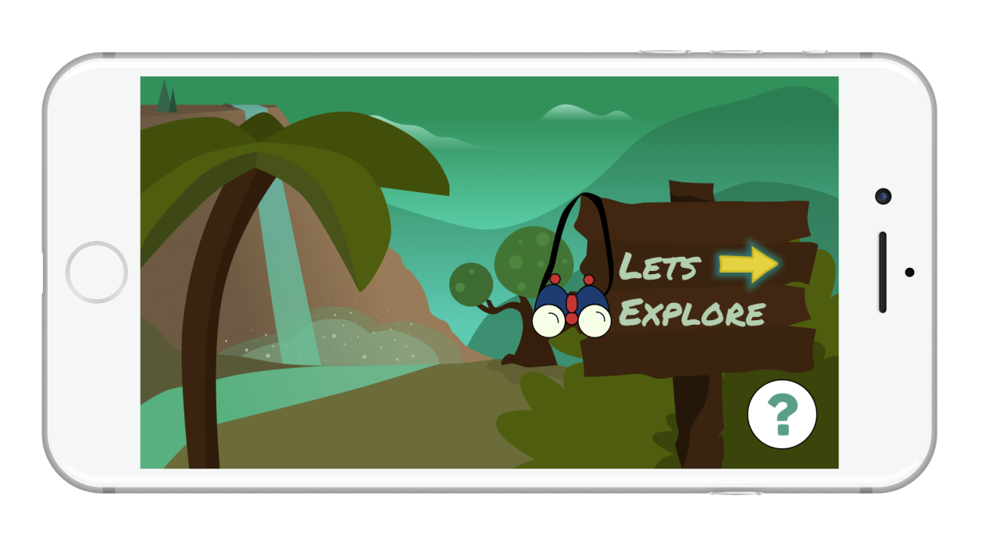

A Series of Laptop backgrounds
The process of creating my laptop backgrounds
In this project I created a series of laptop backgrounds through using only line.
Always start on Paper
To get used to drawing by using only line, I decided to draw one line in each square within a grid of 20 squares. This then increased to 3, then 5. After doing this, I then sketched out some ideas for my laptop backgrounds in black and white, then in colour.




Digitalising
I then digitalised my designs using 'sketch'. I digitalised them in black and white, then in colour.



Final Designs
Below is my final laptop background designs.